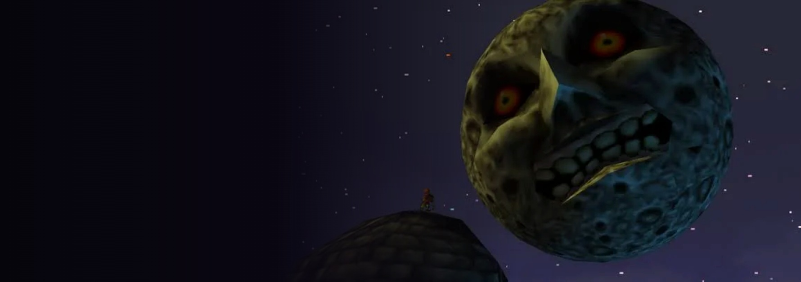

One library
Point the launcher at the folders where your games live. It recognises each title, shows every way you can play it, and marks the ones that are ready right now.
Windows launcher · pre-release v0.3.0
Open-source emulators and PC recomps, gathered into one Termina-themed library. Pick your build, install it in a click, and tune every emulator without hunting through config files.

Why one archive
Zelda emulation is spread across a dozen projects, each with its own releases, folders and config files. Majora Archive brings the pieces together and stays out of the way once you're playing.
Point the launcher at the folders where your games live. It recognises each title, shows every way you can play it, and marks the ones that are ready right now.
Take the official release or a community fork for each emulator or recomp. Every build installs into its own folder, so Azahar Plus can sit beside Azahar and VBA-M beside mGBA without breaking either.
Friendly controls for the settings people actually change, the full key list for everything else, and a raw editor when you want it. Every save keeps the previous version, so one button undoes a bad edit.
Bind a key in one click for melonDS and mGBA, or set controller bindings for RetroArch, Dolphin, Ryujinx and Eden. Changes go straight into the emulator's own file, not a separate profile.
Component installs and update checks · checksum verification · cover art cache · your own music · Triforce Setup
Inside the archive
Everything you need is one panel away: the games you own, the builds you installed, the settings for the program in front of you.
Bring your own
Majora Archive is a launcher, not a storefront. It ships no game data and never asks you to upload anything. You bring the files you already own; the launcher brings the programs that run them.
Use the ROMs and disc images you legally own. The launcher only scans the folders you point it at.
Switch emulation needs keys and firmware from your own console. DS, 3DS and GBA emulation may need your own BIOS dumps.
Every emulator and recomp belongs to its community and keeps its own licence. Majora Archive only downloads the builds those projects publish.
Windows 10 / 11 · x64
One installer. No account. No game data inside. Free and open source, forever.
The build is not code-signed yet, so SmartScreen may say Unknown publisher. Choose
More info → Run anyway if you trust the release. SHA-256:
4653372f83172eefb3b8a23f2c900a39b5a01b37b8e45bd60005ce1c80b6a5c0
Support the archive
Majora Archive is free, open source and stays that way. If it saved you an evening of config hunting, you can buy me a coffee. One-off, no subscription, and nothing is locked behind it.
Questions
No. Majora Archive ships no ROMs, disc images, encryption keys, firmware, BIOS files or game assets. It launches the copies you already own.
Windows 10 or 11 on x64. Some emulators need extra files: Switch needs keys and firmware, and DS, 3DS and GBA may need a BIOS dump. The launcher tells you what is missing.
Yes. Majora Archive is GPL-3.0-or-later. Every emulator and recomp keeps its own licence; they are downloaded from their own projects, not repackaged.
The installer is not code-signed yet. SmartScreen shows “Unknown publisher” for new unsigned builds. Verify the SHA-256 above and only run releases from this repository.